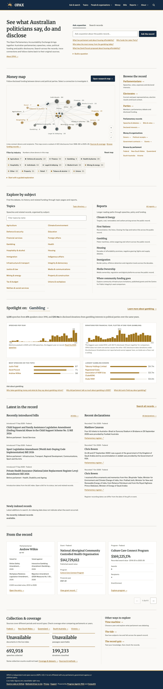

Ten peer blocks and 112 links (outside the masthead and footer) become five blocks: ask or search, browse, the money map, what's new, reports. Every in-site link loses its arrow; one primary button on the page.
Before · local render of main a3aa6532 (portraits hidden; live counters off locally)

1 2 3 4 5 6 7 8 9After · 1280px wireframe at the same scale
The Open Parliamentary Accountability Exchange brings together Australian parliamentary speeches, votes, political funding and public disclosures, each linked to its original source.
On 26 and 27 September 2026 I was a guest of the government of the Kingdom of Saudi Arabia …
Two tickets to Theatre Royal production valued at $99 each.
Changes a documented rule (D3): this supersedes three homepage rules in UI_DESIGN_LANGUAGE.md (Collection & coverage shows all four figures; the Spotlight section; From the record on the home page). Default under the full-speed plan; Jake can overturn it.